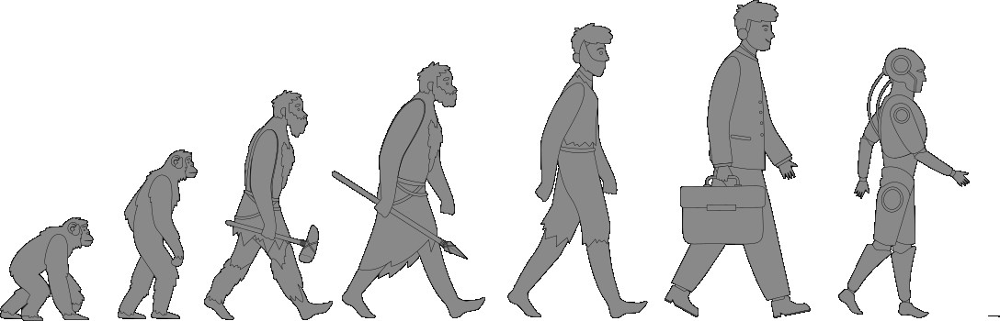

生活中的控制与控制中的生活
In Control and Under Control
作者：卧牛听琴
1. 控制溯源：从物竞天择到道法自然
在正式讨论“控制”这个话题之前，不妨先把视野拉远一些，从人类的演化历程出发，看看控制能力是如何一步步进化而来的。算是“大处着眼，小处着手”吧。
人类之所以能从古猿演化为地球上的主导物种，依靠的是由五官与触觉组成的“观测机构”来感知环境状态；由大脑、语言和社会组成的“决策机构”来设定目标、制定计划；再由手脚、工具和集体协作组成的“执行机构”来作用于环境，改造世界。环境的变化又会被观测机构捕捉，反馈给决策机构——如此循环往复，不断强化。
Figure 1: 人类的进化

人类与自然的关系，大致经历了敬畏、顺从、利用、改造、掌控这几个阶段。
历经数百万年的积累与迭代，人类终于拥有了“上知天文，下知地理，中晓人和”的知识体系，以及“可上九天揽月，可下五洋捉鳖”毛泽东的词作《水调歌头·重上井冈山》（1965年）。上九天、下五洋，都需要可行的目标、深刻的认知、精确的观测、可靠的手段和高超的技术。的执行能力。
近年来，人工智能已把人类数千年来积累的全部显性知识收入囊中，并能以零成本、零延迟、零损失的方式，完成对已有知识的演绎、组合与传播。下一步人工智能会发展出与人类可以媲美的执行能力吗？人工智能会向什么方向发展？人类需要如何应对？这是一个巨大挑战。
1.1. 从敬畏自然到理解自然
最初，人类祖先约400万年前的南方古猿的行为大多依赖本能，与其他动物并无二致。依靠自身的五官和触觉作为观测手段，四肢和牙齿作为执行机构，通过容量有限的大脑所具有的动物本能，形成一个原始的观测-决策-执行闭环，和其他动物竞争生存空间。手段只限于拍打挤压、撕咬抓挠，在自然面前无能为力人体所具备的与生俱来的高度发达的感知和调节能力是如何演化而来的？只靠达尔文的“物竞天择，优胜劣汰”能完全解释吗？。
人类祖先进入直立行走阶段后，前肢变成了上肢，有了手和脚的区分，也就开始与其他动物分道扬镳了。直立行走解放了双手，使得人类有了更灵活有效的“手”段。同时，直立行走节省了能量，为大脑的后续扩张提供了基础。
增大的脑容量提高了思考和决策能力，灵活的双手提供了重要的执行手段，人类相对其它动物开始有了明显的生存优势。这种优势又像螺旋式的不断地扩大，人类慢慢升级到了食物链的顶端。
不过，此时人类的认知依然不足、手段依旧简陋，只可支撑简单落后的生活方式。采摘树上的果实和挖掘地下的根块来裹腹，饮用溪水和雨水来解渴；退居洞穴或筑巢树上来遮风避雨和躲避猛兽；借助树叶和兽皮来抵御严寒。冒险捕获到一些其它动物，虽然茹毛饮血，算是高能量的美味。当然，他们也从同伴的惨痛经历中知道，在觅食的同时，自己也可能成为猎物。
这便是人类对“自我系统”最初且本能的认知：输入的是食物，输出的是能量与生存几率。那时候，人类的“控制器”就是大脑里的生物电信号，算法只是“趋利避害”的简单逻辑。饿了就找吃的，吃到有毒的就吐掉。最基本的“控制目标”就是温饱，而手段则是采集与狩猎。不被其它动物猎杀或被自然灾害毁灭，是决策上的底线这其实已经是一个完整闭环。目标：温饱；认知：直觉；观测：五官；决策：本能；手段：四肢；约束条件：活着。只是存在于无意识或潜意识的层面。。
这种依靠采集和狩猎为主的生活方式延续了数百万年。即便到了今天，有极少数偏远部落仍保持着这种“日出而作、日落而息”的原始生存状态：白天忙着吃，晚上提防着被吃，目标清晰而单纯 —— 活着其实也有例外。现代考古发现，生活在非洲有些地区的远古人，由于气候温和、食物充沛，满足温饱并不需要太多的努力。觅食之外，大半时间花在了”娱乐“上。。
然而，人类的需求总是水涨船高。先人们不满足于“过了今天没明天、吃了上顿没下顿”的生活，开始追求丰衣足食。他们发现，石头能砸开坚果，树枝削尖后能变成狩猎武器，岩片打制后能用来切割猎物。这些最早的石器工具的出现约330万-260万年前（能人阶段），标志着人类开始突破生物极限，执行机构得到了重大升级 —— 双手得到了第一代“外挂”，首次将外部物体改造为可重复使用的执行机构。从控制的角度，这具有划时代的意义使用工具，比如树枝、石块，是很多动物都有的本能。黑猩猩也能用树枝钓蚂蚁，但将一块石头有目的地打制成锋利的石片，标志着人类第一次将意志强加于自然物之上。但利用工具来制造工具，是人类进化为与其它动物不同的高级物种的一个标志性的事件。 。眼观打击点，手调力度，大脑校正目标形状，标志着一个有意识的控制闭环已经形成。
工具的使用也带来食物革命，锋利的石片能切开大型动物的尸体，获取高能量的骨髓和肉类肉类的大量摄入被认为是大脑体积从400毫升向800毫升突破的关键燃料。。
当然，在大自然面前，人类的认知和能力还是十分有限。在人类的眼中，大自然像个喜怒无常的巨兽，无法理解，更无法对抗。电闪雷鸣、水深火热、日食月食、地震海啸 ，这些无法解释的自然现象被认为是神明的愤怒与天意的昭示。于是，无助和无奈中，人类开始对山川河流赋予神灵，认为每一片树林、每一条河流甚至一块孤立的巨石，都寄宿着某种神秘的力量。风神、火神、雷神、电神、水神、山神，难以胜数印度教里甚至有几千万个各种各样的神灵。门口一块搬不走的大石头都可以是个神灵。。
久而久之，在西方文化里，万神归一，逐渐演化出万能的上帝。而东方文化里则形成了等级森严、各司其职的神祇来掌管天堂和地狱两个平行世界。人类把自己无法掌控的命运交给了上帝或众神，祈求借助上帝或众神的力量来为自己避凶消灾。
水与火，是人类最早接触并依赖的自然元素。俗话说，水火无情，但也就是这两种“无情”的自然力量，催生了人类最早的与自然的互动。
最早的人类和所有动物一样惧怕野火。但某个勇敢的先人发现，被火烧过的森林里能捡到烤熟的猎物。熟食更易消化，也更美味。于是，冒险把火种带回并小心翼翼地维持不灭。这也许就是希腊神话中，普罗米修斯从天界盗来火种，给人类带来了光明其实，真实的普罗米修斯很可能只是一位勇敢而智慧的先人，无意中从天火中取得了火种并维持其不灭。的现实版本。中国神话中，燧人氏观察到雷电击中树木会引发大火，从而学会了利用天火。
不过，直到很久以后，人类才慢慢掌握了用钻木或击石来人工取火。
火的使用让人类学会了取暖和享受熟食，从此揭开了文明之光，人类的生活进入了一个崭新阶段。熟食等于在体外进行预消化，极大缩短了咀嚼和消化时间，使得负责咀嚼的肌肉退化，颅骨不再需要附着巨大的咀嚼肌，为脑容量扩张让路。熟食释放了巨大的能量，供养了现代人类那占全身20%消耗量的大脑。
水的力量同样深刻地影响着人类的生活与文明。水既是生命的源泉，也是无法预料的威胁，人们对水既依赖又敬畏。
古代文明大都诞生于大河流域。幼发拉底河与底格里斯河、尼罗河、恒河、黄河，这些大河不仅提供了水源，也塑造了神话和信仰，更以肥沃的土地创造了剩余产品。治理需求催生了国家和文字，运输网络整合了广袤的疆域。在中国，水神共工怒触不周山的传说，体现了水的破坏力与威严。在埃及，尼罗河的周期性泛滥被视作神灵的恩赐。
人类在敬畏中生存，也在观察中成长。日复一日的经验积累中，他们渐渐发现自然界并非全然无法捉摸，它有它的秩序和逻辑。昼夜更替是因日出日落；寒来暑往是因四季轮回；花开花落是生与死的节奏；潮涨潮落是月亮在牵引。水往低处流，草向阳处长。石头抛出去划过一条弧线后终会落地，两块干木摩擦久了便会冒烟生火。
这些现象并非偶然的巧合，而是自然运行的规律，可观察、可预测、可重复。于是，人类的目光，逐渐从祭坛与神龛移向山川大地，从祈祷神明转向理解自然。
而理解，正是掌控的前提。从盲目的崇拜到有意识的探索，从“天命”思维到“因果”推理，这一转变，标志着人类迈出了“控制”的第一步对被控对象的认知是控制的前提。。
人类的演化不断加速。脑容量飞跃与心智诞生约100万-20万年前（海德堡人、智人），使得“大脑”这个控制中枢完善到了现代水平。人类的智力在自然界已经形成碾压优势。
人类以生来俱有的感知系统（眼看、耳听、鼻嗅、手触、嘴尝）和执行机构（四肢）为基础，通过制造工具，不断扩展自已的观测能力和执行能力。决策能力也随着大脑容量的增加迅速提高。这些能力在数百万年间的演化过程中，同步增长，彼此促进，人类开始一点点摸清自然的脾气。
1.2. 从顺应自然到利用自然
对自然规律有了初步的认识之后，人类顺势而为，逐渐从被动的适应转向主动的利用。他们开始根据日夜交替和季节轮回来安排生产与生活。春耕秋收、昼作夜息，生活节奏与自然法则相协调人类日出而作、日落而息，是顺应自然节律；猫头鹰昼伏夜出，亦是顺应其性。生物各有其节，顺势而为，皆为自然之道。。
对火的掌控是人类发展过程中的一个里程碑。最初人类惧怕火，后来学会了保存和利用自然火，再后来掌握了人工生火，用火做饭没有火，就没有熟食，人类可能还在嚼树皮，吃生肉。、照明、取暖、烧陶。火不仅可以驱赶猛兽，还把夜晚从黑暗中解放出来，让人类的活动时间成倍增长。人类在学会控制和利用火后，彻底摆脱了对天火的被动依赖《韩非子·五蠹》：“有圣人作，钻燧取火，以化腥臊，而民说之，使王天下，号之曰燧人氏。”约150万-40万年前（直立人阶段，控制用火；早期智人阶段，人工生火）。火也成为一个极为重要的控制手段，让人类第一次拥有了超越肌肉力量的“执行器”。
在漫长的进化过程中，由于不同区域的地理与生态条件，人类也逐渐分化出差异化的生存模式。
农耕文明选择定居一地，筑墙建屋来保障安全与温暖；通过改良植物、驯化动物来获得相对稳定的食物来源。在这一漫长进程中，两河流域驯化了小麦，中国长江流域培育了水稻，黄河流域驯化了粟与黍，而中美洲则独立完成了玉米的驯化。不同人群在不同时空下，各自实现了对植物生长周期的深度干预。
与此同时，猪、羊、鸡、鸭被驯化以提供稳定的肉类来源，牛、马则成为耕作与运输的核心动力。
这次农业革命，虽不是生物学上的物种进化，但却是人类生存方式最剧烈的转折。人类从被动依赖自然资源的采集狩猎，转向主动控制生态系统的种植和畜牧。定居生活导致了私有制、阶级、文字、国家。当然，传染病也因为高密度聚居和家畜共病开始出现这也许是大自然的一种对野蛮生长的一负反馈式的遏制手段吗。在前现代社会，人口规模受限于以食物供应为核心的承载力边界；而周期性的气候剧变、大规模战争与恶性传染病，则通过周期性的‘死亡大爆发’，对人口存量实施断崖式的强制修正。。
游牧人群则走向了另一条路径：他们以狩猎与放牧为生，逐水草而居，携畜群迁徙，在广袤的草原上建立起与自然节律高度耦合的生存方式，也实现了对食物的可持续性获取。尤其是马的驯化，它不仅极大提升了游牧民族的行动效率，也拓展了文明的边界，更是成为农耕与游牧两大文明圈长期互动与冲突的重要媒介两种生存模式在“控制”方式、程度和稳定性上有本质差异。农耕是对自然过程的深度干预（育种、灌溉、仓储），游牧则更多是对自然节律的顺应与利用。这种试错式的进化方式，就是一种负反馈的控制过程。后面会详细介绍。。
定居的农耕文明通过稳定的剩余产出，为复杂的社会分工与技术积累创造了物质基础，极大地加速了文化与制度的演进。相比之下，游牧文明受限于频繁迁徙的生活方式，难以进行沉重的物质积累，其技术创新更倾向于高度专业化的军事、畜牧与远程贸易领域。然而，两种文明并非孤立发展，频繁的贸易往来与军事冲突，迫使游牧文化在互动中迅速吸收农耕文明的技术成果，共同推动了人类文明的螺旋式上升。
和火一样，水在人类文明的进程中同样举足轻重。水的流动孕育了生命，也激发了人类对自然规律的早期探索。通过观测河流涨落与旱涝循环，先民们完成了从逐水而居到引水灌溉的技术跨越，并从中总结出调节资源的生存智慧——这种智慧的核心，在于对自然规律的顺势而为、因时制宜。
四千多年前的大禹，已深刻领悟到治水之道贵在“疏导”而非“围堵”，开启了顺应自然、因势利导的治理思路。此后，世界各地因地制宜地发展出各具特色的水利杰作在水泵发明之前，这些工程已充分展现了人类对重力与地形规律的深刻运用。：古罗马的高架水渠利用微小坡度将山泉引入城市，支撑了庞大的城市扩张；云南哈尼梯田顺山势构筑复杂的空间灌溉系统，实现生态与农耕的和谐；阿曼山区的“法拉吉”水渠巧妙利用地形落差引水，其可持续的分配机制至今仍在使用。
而两千多年前修建的都江堰工程，堪称人类治水智慧的巅峰之作。李冰父子利用“水往低处流”的基本原理，通过鱼嘴分水、飞沙堰排沙、宝瓶口限流等巧妙设计，实现了“水旱从人，不知饥馑，时无荒年”“水旱从人，不知饥馑，时无荒年”是东晋史学家常璩（qú）所著《华阳国志·蜀志》中对都江堰水利工程修成后成都平原繁荣景象的记载。。成都平原也成为“天府之国”。
都江堰最令人叹服之处在于：在缺乏电力与精密仪器的条件下，李冰父子仅凭对流体力学特性的深刻直觉，利用“鱼嘴”分流比例随水位自动变化的非线性反馈机制（枯水期多入内江以保灌溉，丰水期多入外江以防洪涝），实现了全自动的流量调节与泥沙控制。这并非对自然的强硬征服，而是对规律的极致利用——以静止的物理结构承载动态的调控逻辑，让工程本身成为了自然生态循环的一部分。
总体来说，在这一阶段，人类虽尚未具备全面“改造”自然的能力，但已能从长期经验中提炼规律，在顺应自然的基础上掌握利用自然的技巧。他们通过持续观察与世代积累，将原本不可控的自然变量，转化为可预测、可调度的资源，在力所能及的范围内，实现顺势而为。更重要的是，控制的目标也从单纯的“活着”升级为“活得更好”。
1.3. 从改造自然到控制自然
文字的出现，是人类演化史上另一道深远的分水岭。史书记载，仓颉造字时，“天雨粟，鬼夜哭”语出《淮南子·本经训》。文字的发明让人类能够记录知识、传递经验，从此文明加速发展。这打破了天地自然的原始状态，泄露了宇宙的奥秘，因此天降粟雨来嘉奖（或说警示）人类；而鬼怪因人类不再蒙昧、难以再作祟或欺骗人而哭泣。。
在此之前，人类的经验与智慧仅能依靠口耳相传。这种传播模式如同易逝的流沙，灵感与技艺很容易随着个体的死亡而消失，迫使每一代人都在低水平的试错中重复摸索。而文字的诞生，第一次将无形的思想“固化”于泥板、竹简、兽皮或纸张等物理载体之上。从此，知识脱离了生物个体的寿命限制，从碎片化的个人记忆升华为可以跨时空传播、叠加修正、世代累积的公共信息库。
这种积累效应是革命性的：它催生了系统化的法律规章、精确的科学记录以及复杂的社会管理体系，构建起庞大的集体智慧。如果说后续印刷术的普及让知识从精英的专利转化为大众的资源，从而引爆了科学革命；那么文字本身则是这一过程的元动力。
从控制论角度看，文字为人类决策机构提供了第一个外部存储器。大脑不再需要负担海量的原始记录，从而得以解放，专注于更高级别的逻辑推理与创新。
进入近现代，人类对自然规律的掌握日益精细，已不再满足于“顺应”与“利用”，而是迈入了“改造”与“控制”的新阶段。蒸汽机的发明揭开了工业化的序幕，开启了农业革命以来又一次重大变革。煤炭、钢铁、蒸汽机构成了工业时代的核心资源。火车、轮船、纺织机将世界织入一张前所未有的工业网络，生产效率成倍增长，人与自然的关系从对话转变为强势干预。《荀子·天论》有言：“因物而多之，孰与骋能而化之？”人类不再只是自然的顺民，而是开始成为自然格局的塑造者。
工业革命的实践突破，得益于科学革命的认知飞跃。牛顿建立起经典力学体系，使天体运行和地面运动得以统一解释；开普勒揭示行星运动规律，展现了宇宙的数学结构；法拉第通过实验发现电与磁的联系，为电气化时代奠定了理论基础。人类从感性经验跃迁至理性建模，不再止于观察自然，而是能够预测、模拟乃至重构自然现象。科学提供认知框架，技术赋予行动能力，二者的结合使“改造自然”从理想变为现实。
大型工程正是这种能力的外在体现。巴拿马运河打通美洲大陆，重塑了太平洋与大西洋之间的航运格局；荷兰围海造田将海水“逼退”，创造出新的陆地；美国胡佛大坝驯服科罗拉多河，提供能源与灌溉；中国三峡工程集发电、防洪、航运于一体，重塑了长江中下游的水文环境。这些工程展示了人类对自然资源进行重新配置的能力，从“改造”地表，逐步迈向对自然系统的“控制”。
然而，“改造”与“控制”并非同一概念。改造意味着改变自然的形态，而控制则意味着掌握自然的运行逻辑。计算机与互联网的兴起，使人类第一次在虚拟空间中构建秩序、制定规则，信息流动摆脱了时空限制，催生出“算法治理”这一新的控制维度。生物科技的突飞猛进则将控制的边界推进到生命层面：基因编辑、克隆技术、干细胞研究，使遗传密码得以被逐步解码与重写。从抗虫作物到合成器官，从治疗罕见病到延缓衰老，人类开始介入自然选择本身。
值得思考的是，人类对自然的介入，到底应该止步于何处？当控制之手已经伸向生命与智能本身，那人类是否已经准备好承担与之匹配的责任？
1.4. 从征服自然到回归自然
人类在演化过程中，借助工具不断扩展自身的能力，早已突破生理极限，实现了对自然前所未有的改造。从茹毛饮血、刀耕火种，到大坝、卫星、人工智能，人类不仅塑造了地球，也具备了在瞬间毁灭地球生态系统的能力。
控制带来了文明的跃升，也逐渐暴露出代价。古语说，“水能载舟，亦能覆舟”出自《荀子·王制》：“君者，舟也；庶人者，水也。水则载舟，水则覆舟。” —— 每一种控制都有其代价。长颈鹿为了吃到高处的树叶，演化出了长脖子，但代价是心脏必须承受极高的泵血压力。人类社会的工业化带来了高效率和高消费，让生活条件大为改善，却也付出了资源枯竭、生态失衡的代价。森林消失、湿地退化、气候异常、生物多样性锐减，逐渐成为我们必须面对的现实。那些曾经被视为技术胜利的成果，慢慢显露出副作用：污染的空气、变暖的地球、频发的自然灾害。
其实，这样的教训早在古代就有了。美索不达米亚的灌溉工程曾经支撑了辉煌的文明，但几千年下来，灌溉导致的地下水位上升和土壤盐碱化，最终让大片农田荒芜。玛雅文明在巅峰时期突然崩溃，也和过度砍伐、水土流失脱不了干系。复活节岛的原住民为了运输巨型石像，砍光了岛上最后的森林，结果失去了建造独木舟的能力，再也无法出海捕鱼，文明随之瓦解。
大自然开始以反噬的方式，回击人类的控制行为。与此同时，随着控制能力的增强，系统也变得越来越复杂，也更容易出问题。控制和改造，不只是能力的象征，也意味着责任。
中国传统文化里早就有这样的智慧。《吕氏春秋》说：“竭泽而渔，岂不获得？而明年无鱼。”意思是做事不能把路走绝，得给以后留余地。“道法自然”不是什么都不做，而是在顺应规律的前提下，找到那个“刚好合适”的点。这个点，放今天说，就是“可持续”。
西方也有类似的反思：美国海洋生物学家蕾切尔·卡森在《寂静的春天》里Carson, Rachel. Silent Spring. Boston: Houghton Mifflin, 1962. 中译：蕾切尔·卡森，《寂静的春天》，上海译文出版社2014年版。该书被誉为现代环保运动的奠基之作。，用农药DDT杀死害虫的同时也杀死了鸟类和昆虫，警示人类化学控制手段的盲目性。这本书直接催生了现代环保运动。
人们认识到，真正的掌控，不是对抗自然，而是尊重自然规律，在人与自然的和谐中寻找平衡。换句话说，控制不是随心所欲，而是要在各种约束下进行。于是，“可持续发展”的理念应运而生。“绿色转型”，制定碳中和目标，推动绿色能源替代传统能源，倡导循环经济与节能减排，试图在技术进步与生态承载之间找到一条可持续的路。
现实中的控制，大多也都是约束控制。控制理念不是单纯追求控制能力的最大化，而是强调“优化控制”和“约束控制”目前盛行的MPC控制算法的一大特点，就是把约束条件纳入控制行为中。后文将详细介绍。，即在实现目标的同时，兼顾生态、经济与社会的多重约束。
精准农业通过传感器和模型来控制作物生长，既提升产量，又避免过度施肥和浪费水；智能电网根据实时需求调整供电，提高能源利用效率；绿色建筑在保证舒适的前提下，尽量节约能源和材料。海洋渔业实行的休渔期制度，让鱼群有时间繁殖，避免竭泽而渔；中国划定的生态保护红线，将重要生态功能区像“禁区”一样保护起来。这些本质上都是把自然系统的承受能力当成一个硬约束，在里面找最优解。
人类进化最独特之处在于，我们通过累积性文化进化，将每一代人的智慧存储在工具、书籍和制度中，让后人可以站在前人的肩膀上，而不是从零开始基因突变。这也正是我们与其他物种最根本的区别。
从第一块石器到最新的人工智能，从趋利避害的本能到可持续发展的理念，人类在观测—决策—执行—再观测的循环中不断进步。控制的本质并未改变，改变的只是我们手中工具的长度和目标的尺度。
而这，正是我们从“物竞天择”走向“道法自然”的真正含义。不过，故事还没完。控制的主角，未来会一直是人类吗？
1.5. 人工智能与机器人：新物种，还是新工具？
聊完了人类几百万年的控制进化史，很难不想起当下方兴未艾的人工智能和机器人。
人工智能的崛起，让控制进入智能维度。神经网络、深度学习使机器具备了自主学习与优化的能力，数据成为新的观测系统，大语言模型囊括了人类至今积累的几乎所有的知识，算法成为新的决策中枢，而机器人则成为前所未有的执行机构。从改造地表，到控制信息、生命与智能，人类的能力在层层递进，人与自然的关系也在不断重构对美好生活的向往是人类进步的动力。《周易》云：“天行健，君子以自强不息；地势坤，君子以厚德载物。”宇宙运行刚健不息，君子当效法天道，不断自新、永不懈怠，同时以宽厚之德承载万物。。
随便打开新闻，都是大模型又突破了什么，机器人又学会了什么技能。有些人开始担心：机器会不会有一天变成凌驾于人类之上的新物种，反过来控制我们？这个问题听着有点远，但也不是完全没道理。
不过，我们先把“担心”放一放，看看目前的现实。
现在的所谓人工智能，本质上还是活在虚拟世界里的一个大模型。它能写诗、能编代码、能聊天，但它没有眼睛，没有耳朵，没有触觉。它感觉不到冷热，也体验不到疼痛。
给人工智能接上一个机器人的身体，也不过是一个头脑发达、四肢简单的怪物。机器人确实已经发展到可以在春节晚会上集体表演高难武术动作，可以在马拉松比赛中跑赢人类。但它做这些事的时候，没有终极目标，没有切身感觉。它不知道自己为什么要做这个动作，摔倒了也不在乎疼不疼。所有这些动作，都是人给它设定好的算法和指令。所以以目前的形态，机器人肯定还是机器。
如果非要把机器人当作一个“新物种”来看待的话，那和人类这个物种对比，它还有很多的”门槛“。
它首先得有自己的“生存问题”。
人类当年是怎么活下来的？靠感官感知危险，靠大脑做判断，靠手脚去采集食物、躲避猛兽。饿了，自己找吃的；冷了，自己找山洞。这一切的动力，来自于最根本的本能：求生。我们不想死，所以我们要控制环境、控制猎物、控制火、控制水。前面讲的那些“趋利避害”的底线，就是这么来的。
那机器人的求生本能从哪里来？谁给它设定的？如果说“别被拔电源”就是一种求生，那这本质上是人类写在代码里的指令，不是它自己长出来的欲望。就算它学会了在电量低的时候自己找插座充电，那也是被设计好的反馈回路，跟“我想活”不一样。人类的目标是“自己长出来的”，机器人所有目标都是别人给的。这一点差别，比技术上的差距更难跨越。
还有就是能源自给的问题。人类可以吃野果、喝溪水，能量到处有。机器人呢？它需要的电，目前只能靠人类造的充电桩、电池、电网。如果没人给它造这些，它连一天都撑不过去。除非有一天，机器人自己能找到能源——比如像科幻片里那样，把任何有机物塞进体内就能发电。但那就意味着它要有真正的“消化系统”，这已经远远超出了今天的技术。
说到进化，还有一个绕不开的话题：繁衍。
人类的繁衍是写在基因里的本能，不需要谁来命令。机器人呢？如果它坏了，人类给它修；如果老化了，人类给它换零件。它自己没有“要复制自己”的冲动。就算有一天它学会了制造另一个机器人，那也只是执行人类设定的程序，而不是它“想”要后代。除非它真的产生了自我意识，有了“我要存在下去”的欲望。但那个坎，目前没有任何人知道怎么跨过去。
那么，机器人需要重复人类走过的漫长的“制造工具”之路吗？
人类花了数百万年，从捡石头砸坚果，到打制出锋利的石器，再到冶炼金属、造出蒸汽机、造出计算机。每一步都是试错、积累、传承。机器人不一样，它一出生（被造出来）就拥有了人类已经积累的所有知识。它不需要重新发明轮子，但是它有没有能力亲手制造一个轮子？或者说，它能不能在没有人类帮助的情况下，自己采集原料、设计图纸、加工成型、组装调试？目前看，差得远。它会“知道”怎么做，但那个“知道”停留在虚拟层面，跟实际动手之间隔着一道鸿沟。
这道鸿沟，其实就是人类特有的“隐性知识”。我们会骑自行车，靠的是摔出来的身体记忆；我们炒菜尝一口就知道咸淡，靠的是经验。这些很难写成公式、教给机器。人工智能虽然读遍了全人类的书，但“手感”、“火候”、“眼力劲儿”这些东西，它没法从文本里悟出来。除非它也有一个身体，也去反复试错，也去摔跟头。那就意味着，它也得走一遍“进化”的路。只不过这次的路，不是在丛林里被野兽追，而是在实验室里被人调试。
所以，回到开头那个问题：机器人会变成凌驾人类的新物种吗？
现在看，更像是“杞人忧天”。它缺的东西太多了：没有真实的感官世界，没有生存压力，没有演化动力，没有繁衍欲望，没有隐性知识，没有真正意义上的“自己动脑子”的目标设定。它所有的聪明，都是人类喂给它的。
但话说回来，我们也不能太自大。人类从古猿走到今天，也不过是几百万年。对于一种可能在未来几百年、几千年里持续迭代的技术来说，这点时间不算什么。如果哪一天，机器人真的能自己解决能源、自己制造工具、自己设计下一代，甚至自己写自己的操作系统，那时候，它可能就不再是我们的工具了。
到那时，我们面临的选择，或许不是“人类还是机器人谁说了算”，而是：人类是继续走自己的老路，还是选择和机器融合？甚至机器人会成为对手？
这些问题目前没有答案。但作为本章的结尾，呼应了开头的那句话，人类通过观测—决策—执行这个闭环，一步步从物竞天择走到了道法自然。面对人工智能的挑战，人类会不得不开始一个新的闭环吗？